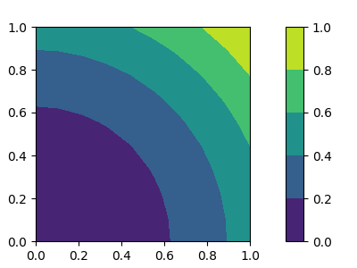

What is partially monotone layer?
Suppose that we want to train a neural network model to learn function \(f(x,y) = (x^2 + y^2)/2\), which is monotonically increasing with respect to \(x\) and \(y\). We can use a standard neural network model to learn this function, but we cannot guarantee that the trained neural network model is monotonically increasing with respect to \(x\) and \(y\).
pmalyer libtray provides several neural network layers to handle monotonicity constraints.
Therefore, we can construct a neural network model by using pmlayer that is guaranteed to be monotonically increasing with respect to \(x\) and \(y\).